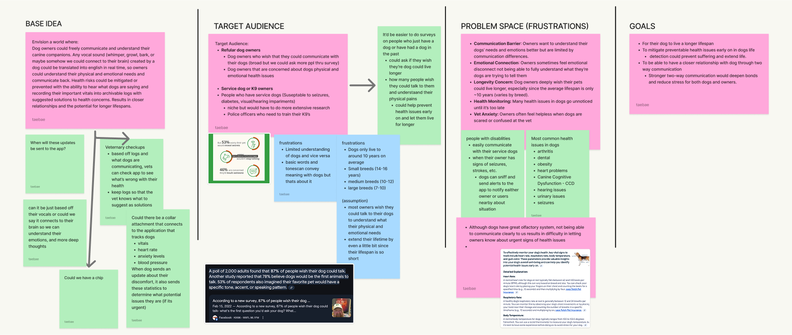
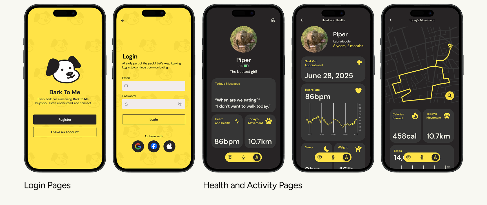

Interface Design
Figma, Adobe Illustrator
by Aron Aguilera, Tae Kim, August Othanavathakit, Lucia Vo
In just 10 days during SFU Surge's SparkJam, our team developed Bark To Me, a speculative app that lets humans communicate with dogs using smart technology. I was responsible for designing the UI (onboarding, login, health/activity dashboards), writing in-app copy, and shaping the brand’s playful identity with a yellow-forward color palette. Through fast iteration and open communication, we transformed a bold concept into a polished, presentation-ready product that won the Audience Choice Award.
Bark To Me Collar and Mobile Application Mock-ups
Our design process began by exploring multiple speculative concepts before choosing the core question: What if humans could communicate with dogs via technology?
One of many of our team's brainstorming documents!
I assisted with the UI design, starting with wireframes organized in a bento box layout to clearly separate features. Early logo sketches were too angular and aggressive, so I advocated switching to rounded shapes to better reflect the playful tone we wanted. The yellow color palette was chosen deliberately because dogs can perceive yellow, reinforcing our concept’s connection to understanding dogs.
Iterations of the logo branding and finalized colour palette.
Throughout the project, we iterated rapidly. For example, redoing the branding was challenging but crucial. It improved the overall friendliness and cohesion of the app. I was responsible for designing the UI, including the onboarding, login, and health/activity dashboards. Additionally, I wrote the app’s copy and helped create the final presentation slides, tying the visual and verbal storytelling together.
My key interactive pages: Login pages, pet health, and activity pages.
Iteration is OKAY. I learned that restarting ideas, such as the Bark To Me branding, led to stronger outcomes that wouldn’t have been possible without letting go and starting over. Communication was key, especially under tight and high-pressure timelines.
Participating in clear, honest collaboration with my peers and mentors helped elevate the project to where it is now. Learning shows up where you least expect it.
In the theme of Bark To Me, my teammates: Aron, Tae, me, and August!